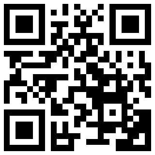

This page is the one-pager we send to providers: what the library is, what it costs your centre, and what we do not ask for.
Noeta is an independent study library for UK qualification tests and the Canadian citizenship test. Seven question banks, each written from published sources, with the answer, the explanation and the document it was written from under every question. The apps work offline and need no account. The same questions run in a browser with no install.
No reviews, no ratings, no mention in your materials, no data about your learners. If the bank is not useful to your students, ignore it — that is a complete answer.
Show this on a projector or print it on a handout: it opens the free browser practice, no install and no account.

| Qualification | Exam shape | Bank |
|---|---|---|
| Life in the UK Test | 24 | 534 questions |
| SIA Door Supervisor | 72 questions, 110 minutes, pass 70% | 1 433 questions |
| CSCS Health, Safety and Environment test | 50 | 449 questions |
| Personal Licence — APLH | 40 | 320 questions |
| Scottish Personal Licence — SCPLH | 40 | 323 questions |
| SIA CCTV Operator | 40 questions, 60 minutes, pass 28 (70%) | 320 questions |
| Canadian Citizenship Test | 20 | 161 questions |